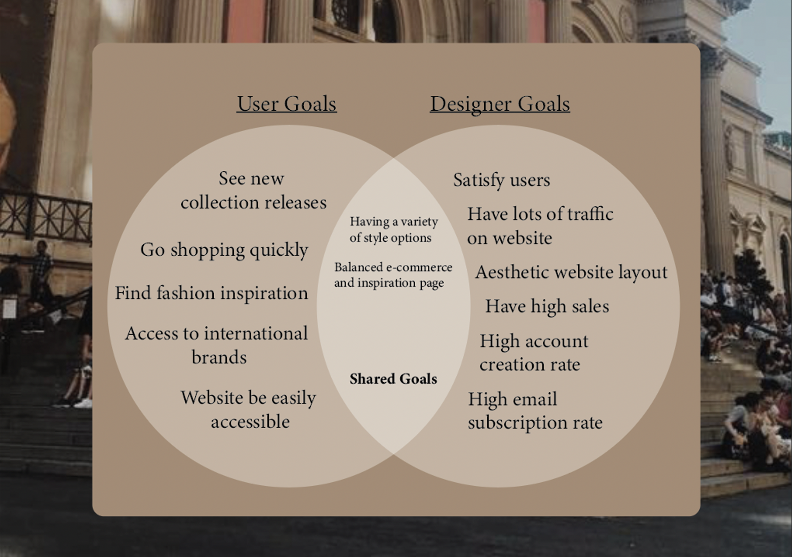

During the tutorial when we were working on the venn diagram I found it kind of tricky to understand where the placement of the goals should go but after rewatching the lecture I had a better idea of what I should be doing, but when I make my diagram I will make sure I get it checked.
This week I also have connected a CSS file to this page and I learnt how to add background colour to specific text, as well as adding interative boarders to pictures as seen below


The reactive borders will be good to think about when considering hover states of an image because it clearly indicates when it has been highlighted, this would support hyperlinks by futher letting the user know what is clickable and prevents second guessing.
These are the website where I like the layout
These are the charecters that I am considering for the project
From the lecture I learnt more about the users goals and really evaluating deeply what is inhibiting them from reaching those goals. Along with this came the tutorial activity of crafting a user venn diagram for Spongebob, the most difficult thing to think about was the share goals and this problem also translated to my actual project. It was difficult to come up with shared goals so I asked for help which made it less confusing.
